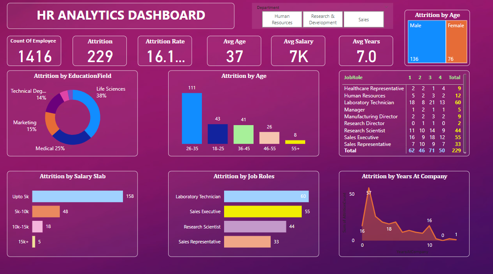

HUMAN RESOURCE ANALYSIS
Power BI project for HR Analytics with KPI cards for Employee Count, Attrition, Attrition Rate, Average Rate, Average Salary and Average Years. I have created multiple charts and pivots for Attrition by Employee Field, Salary Slab, Job Roles, Age and Years at company. All the charts and pivots can be filtered according to the need.
